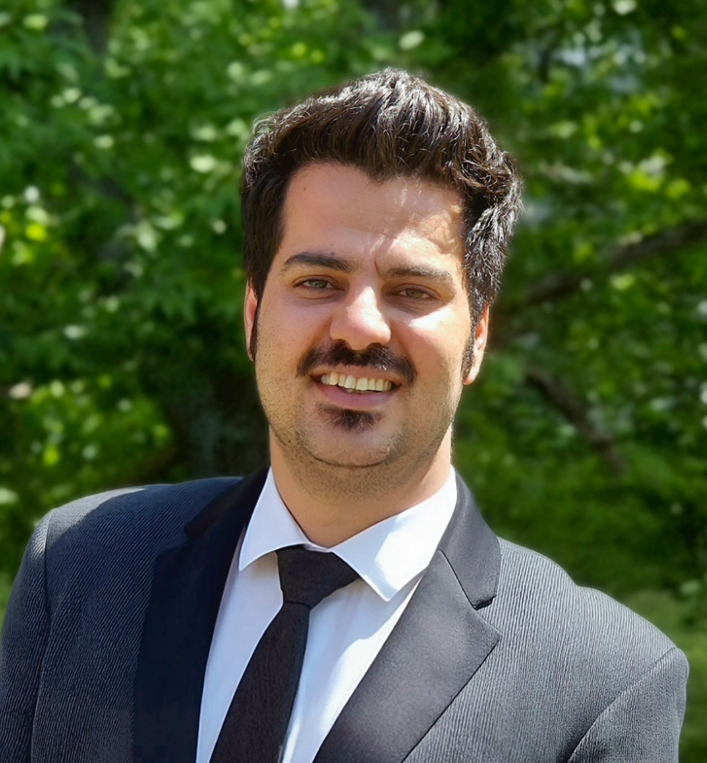

Ph.D. in Biophysics
Postdoctoral Research Fellow at the Universität des Saarlandes

Welcome to my homepage!
I am a Postdoctoral Research Fellow at Saarland University (Universität des Saarlandes) and earned my PhD from Saarland University in 2023.
I am a physicist specializing in soft matter and microfluidics, with a research focus on red blood cell dynamics and biophysical systems. My expertise includes optical microscopy techniques such as fluorescence, widefield, and digital holographic microscopy, as well as image processing, particle tracking, and quantitative data analysis.
I am passionate about combining experimental physics, computational analysis, and interdisciplinary collaboration to investigate complex biological and soft matter phenomena.